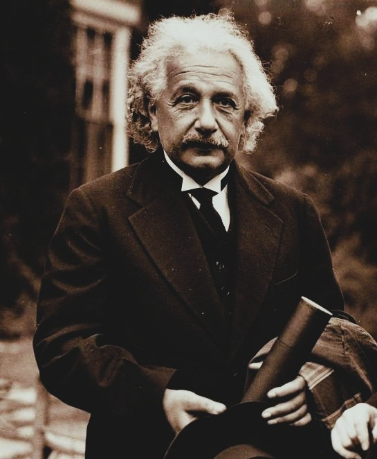
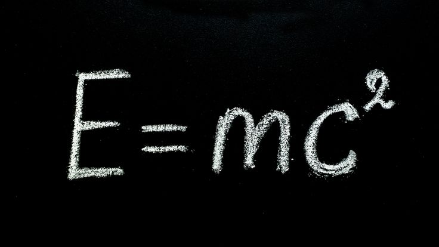

Who Was Albert Einstein?
Albert Einstein was a German-born theoretical physicist whose work fundamentally transformed modern understanding of space, time, gravity, matter, and energy. Born in 1879 and dying in 1955, he is remembered above all as the creator of the special and general theories of relativity, two of the most consequential achievements in the history of modern physics. His scientific work did not merely produce new equations or isolated discoveries; it challenged deeply rooted assumptions about the basic structure of physical reality and forced philosophers to reconsider concepts that had long appeared obvious, including simultaneity, causality, measurement, and the nature of space and time.
Einstein is especially associated with overturning the older belief that space and time form an absolute and universal framework shared in exactly the same way by every observer. His theory of relativity showed instead that measurements of distance and duration depend upon the physical circumstances of observation, particularly relative motion and gravity, while preserving deeper invariant structures within the laws of nature. These discoveries carried profound philosophical implications, making Einstein not only one of history's most important physicists but also a major figure in the development of philosophy of science and the philosophy of physics.
Beyond relativity, Einstein made important contributions to the early development of quantum theory, particularly through his explanation of the photoelectric effect, for which he received the 1921 Nobel Prize in Physics. Yet he later became one of the most influential critics of prevailing interpretations of quantum mechanics, questioning whether a theory based fundamentally on probability could provide a complete description of physical reality. His long intellectual engagement with this problem, especially his debates with Niels Bohr, became one of the defining philosophical controversies of twentieth-century science.
Einstein's philosophical interests extended far beyond technical physics. Throughout his life he reflected on determinism, scientific method, realism, religion, ethics, political responsibility, war, and the possibility of international cooperation. Because these reflections were expressed across scientific essays, correspondence, lectures, and public statements rather than within a single systematic philosophical treatise, his precise philosophical classification remains debated. Nevertheless, Einstein's work and reflections demonstrate an unusually deep connection between scientific discovery and philosophical inquiry, and they continue to shape discussions of reality, knowledge, and the limits of human understanding.
Albert Einstein: Quick Facts
- Name — Albert Einstein
- Period — 1879–1955
- Born in — Ulm, Germany
- Died in — Princeton, New Jersey, United States
- Field — Theoretical physics and philosophy of science
- Known for — Special and general relativity and the equation E=mc²
- Major honor — Nobel Prize in Physics, 1921
- Key philosophical themes — Determinism, the nature of space and time, scientific realism, and Spinoza's God
- Famous debate partner — Niels Bohr, on the interpretation and completeness of quantum mechanics
- Later concerns — Ethics, pacifism, nuclear weapons, international cooperation, and scientific responsibility
Einstein and the Turn-of-the-Century Physics Revolution

Einstein entered physics during a period in which the apparent completeness of the classical scientific worldview was beginning to break down. For centuries, Newtonian mechanics had provided an extraordinarily successful framework for describing motion, while classical electromagnetic theory had achieved major successes of its own. Yet by the end of the nineteenth century, important theoretical tensions had emerged. The relationship between mechanics, electromagnetism, light, and the assumed existence of absolute space and time was becoming increasingly difficult to reconcile within a single coherent physical picture.
One major source of difficulty concerned the nature of light. James Clerk Maxwell's electromagnetic theory described light as an electromagnetic wave, but physicists struggled to understand how this theory should fit with older assumptions about motion and reference frames. Experiments and theoretical developments increasingly challenged attempts to preserve a privileged universal state of rest. Einstein's special theory of relativity would eventually offer a radically new conceptual framework in which the laws of physics and the speed of light could be treated consistently without requiring the traditional Newtonian conception of absolute space and absolute time.
At the same time, another revolution was beginning at the microscopic level through the emergence of quantum theory. Max Planck's work on radiation introduced ideas that would challenge the continuity assumed by much of classical physics, and Einstein himself soon made one of the decisive contributions to this developing field through his explanation of the photoelectric effect. Thus, Einstein became a central participant in both of the great transformations that reshaped twentieth-century physics: relativity theory and quantum theory, even though his later philosophical commitments brought him into serious disagreement with dominant interpretations of quantum mechanics.
The physics revolution surrounding Einstein was therefore also a philosophical revolution. Questions that had often been treated as abstract problems of metaphysics or epistemology suddenly became inseparable from concrete scientific research: What is space? Is time universal? What does it mean for two distant events to occur simultaneously? Does science describe reality itself, or only human observations and measurements? Einstein's career developed precisely at this intersection between physics and philosophy, and his scientific discoveries repeatedly forced a reconsideration of the conceptual foundations through which human beings understand the physical world.
Einstein's Early Life and the "Miracle Year" of 1905
Albert Einstein was born on March 14, 1879, in Ulm, Germany, and spent much of his childhood in Munich, where his family was involved in an electrical engineering business. His early life was not the simple story of an isolated prodigy often presented in popular mythology. Although he showed a strong interest in mathematics and scientific questions, he also developed an independent and critical attitude toward rigid forms of education. After his family's financial difficulties and relocation to Italy, Einstein eventually continued his education in Switzerland, where he entered the Swiss Federal Polytechnic in Zurich.
After graduating in 1900, Einstein struggled initially to obtain a permanent academic position. In 1902 he began working at the Swiss Federal Patent Office in Bern as a technical expert, examining applications involving electrical and mechanical inventions. Although the position placed him outside the conventional university system, it provided financial stability and allowed him to continue pursuing theoretical problems independently. During these years he also participated in intense intellectual discussions with a small circle of friends, developing ideas about physics, philosophy, and scientific method that would contribute to his later work.
The year 1905 became famous as Einstein's "miracle year," or annus mirabilis. Within a remarkably short period, he published a series of papers addressing several of the most important unresolved problems in contemporary physics. His work on the photoelectric effect helped establish the revolutionary idea that light could behave as though it were composed of discrete energy quanta; his analysis of Brownian motion provided powerful support for the physical reality of atoms and molecules; and his paper on special relativity introduced a fundamentally new account of space and time.
Einstein also published the short paper that introduced the relation between mass and energy now expressed by the equation E=mc². These achievements did not immediately turn him into the worldwide celebrity he would later become, but they established him as an extraordinarily original theoretical physicist. More importantly, the papers demonstrated the distinctive intellectual method that would characterize much of his career: a willingness to question apparently obvious assumptions, combine mathematical reasoning with conceptual analysis, and pursue the consequences of physical principles with unusual philosophical depth.
Einstein's Career: From Patent Clerk to World-Renowned Physicist
The importance of Einstein's 1905 work gradually brought him into the academic world he had initially struggled to enter. After leaving the patent office, he held university positions in Zurich and Prague before returning to Zurich and eventually accepting a prestigious appointment in Berlin. During these years his central scientific problem became the extension of relativity beyond the special case of observers moving uniformly relative to one another. Einstein sought a theory capable of incorporating acceleration and, above all, explaining the phenomenon of gravity within a new relativistic framework.
After years of mathematical and conceptual struggle, Einstein completed the central formulation of the general theory of relativity in 1915. The theory presented gravity not simply as a force acting between separate bodies, as in Newtonian physics, but as a consequence of the geometrical structure of spacetime. This achievement represented one of the most profound transformations in the history of physical theory and established Einstein as a scientist of exceptional international importance even before he became widely known outside specialist scientific circles.
Einstein's worldwide fame expanded dramatically after observations of the 1919 solar eclipse were interpreted as confirming a key prediction of general relativity concerning the deflection of light by the Sun's gravitational field. Newspaper coverage transformed Einstein into an international public figure and, eventually, perhaps the most famous scientist of the twentieth century. His name became associated in popular culture with genius itself, although this extraordinary public reputation sometimes obscured the complexity of his actual scientific and philosophical work.
Einstein's career was also profoundly shaped by the political upheavals of twentieth-century Europe. After Adolf Hitler and the Nazi regime came to power in Germany, Einstein, who was Jewish and already an internationally prominent critic of militarism and nationalism, did not return from a trip abroad and eventually settled in the United States in 1933. He joined the Institute for Advanced Study in Princeton, where he remained for the rest of his life. His later years combined continued scientific research, particularly his search for unified physical theories, with increasingly prominent public engagement on questions of war, nuclear weapons, civil rights, and humanity's political future.
What Did Einstein Believe?
Einstein did not develop a single, formally organized philosophical system comparable to those of philosophers such as Kant or Spinoza. Nevertheless, philosophical reflection was central to the way he understood scientific inquiry. He repeatedly examined the foundations of physical concepts, questioned inherited assumptions, and reflected on the relationship between mathematical theory, empirical experience, and physical reality. His philosophy of science developed alongside his physics and drew upon a complex range of influences rather than fitting neatly into a single philosophical category.
A central feature of Einstein's outlook was his conviction that scientific inquiry seeks an intelligible order underlying the apparent complexity of experience. He believed that successful physical theories should do more than merely organize observations or produce useful predictions: they should provide a coherent conceptual representation of the structures and relationships that make physical phenomena intelligible. At the same time, Einstein emphasized that fundamental scientific concepts are not simply copied directly from experience but involve creative theoretical construction, making science a complex interaction between empirical evidence and human conceptual invention.
Einstein also defended a powerful commitment to an objective physical reality existing independently of any particular observer's act of measurement. This conviction became especially important in his disagreement with certain interpretations of quantum mechanics. He did not deny the extraordinary predictive success of quantum theory; instead, he questioned whether probability-based descriptions could represent a complete account of what exists physically. His famous debates over quantum mechanics therefore involved deep philosophical questions about realism, locality, separability, and what scientific theories should be understood to describe.
His broader worldview also contained a strong deterministic tendency, though the precise philosophical interpretation of Einstein's determinism requires care. Influenced in part by Baruch Spinoza, Einstein was deeply attracted to the idea of a universe governed by lawful and intelligible necessity rather than arbitrary intervention or fundamental chaos. Yet his mature philosophy of science cannot be reduced simply to determinism or scientific realism. It combined concerns about theory construction, empirical evidence, simplicity, mathematical unity, and objective reality, making Einstein one of the most philosophically significant scientist-thinkers of the modern era.
The Theory of Special Relativity Explained

Einstein's special theory of relativity, published in 1905, transformed the classical understanding of space and time by showing that measurements of distance and duration cannot be assumed to possess the same values for all observers. Classical physics had generally treated time as flowing uniformly throughout the universe and space as a fixed stage within which objects moved. Einstein showed that this picture becomes incompatible with the structure of electromagnetic theory and the observed invariance of the speed of light, requiring a new way of understanding the relationship between observers, motion, space, and time.
The theory rests on two foundational principles. First, the laws of physics have the same form for all observers moving uniformly relative to one another; there is no experimentally privileged inertial frame that can be identified as a state of absolute rest. Second, the speed of light in a vacuum has the same value for all inertial observers, regardless of the motion of the source emitting the light. These principles appear simple, but together they require a fundamental revision of ordinary intuitions concerning simultaneity, duration, and spatial measurement.
One of the theory's most important consequences is the relativity of simultaneity. Events that one observer judges to occur at the same time may not be simultaneous for another observer moving relative to the first. This does not mean that reality becomes subjective or that anything can be considered true merely because an observer believes it. Rather, it means that temporal measurements depend upon the physical relationship between the observer and the events being measured. The theory therefore distinguishes carefully between observer-dependent measurements and deeper invariant features of physical law.
Special relativity also predicts phenomena such as time dilation and length contraction. Moving clocks are measured differently relative to observers in different inertial frames, and lengths measured along the direction of motion can likewise differ depending on the observer's relative motion. These effects are not merely optical illusions or errors of perception; they follow from the mathematical structure of spacetime and have been repeatedly confirmed experimentally. Einstein's achievement therefore represented both a scientific revolution and a philosophical challenge to the assumption that human common sense provides a reliable guide to the deepest structure of physical reality.
The Theory of General Relativity Explained
Einstein's general theory of relativity, completed in its central form in 1915, extended the conceptual revolution of special relativity by developing a new account of gravity. Newtonian physics had described gravity as a force acting between masses across space, an approach of extraordinary predictive power but one that left deeper questions about the nature of gravitational interaction unresolved. Einstein instead proposed that gravity should be understood through the geometry of spacetime itself, fundamentally changing the conceptual relationship between matter, motion, and physical space.
The central idea is often summarized by saying that mass and energy influence the curvature of spacetime, while this curved spacetime influences the paths followed by matter and light. Objects moving under gravity are therefore not simply being pulled through an otherwise unchanged background by an invisible force in the traditional Newtonian sense. Instead, their motion reflects the geometrical structure of the spacetime in which they exist. Einstein expressed this relationship through highly sophisticated field equations linking the distribution of matter and energy with the curvature of spacetime.
General relativity produced several striking predictions that distinguished it from Newtonian theory under extreme conditions. These included a precise account of the anomalous motion of Mercury's orbit, the deflection of light passing near massive bodies, and gravitational effects on the passage of time. The confirmation of the predicted deflection of starlight during the 1919 eclipse helped make Einstein internationally famous, although later observations and increasingly precise experiments have provided a much broader and more rigorous body of evidence for the theory than that single historical event.
Among the theory's most remarkable later confirmations was the direct detection of gravitational waves, ripples in spacetime produced by accelerating massive objects, first observed directly in the twenty-first century. General relativity also became essential to modern understanding of black holes, cosmology, and the large-scale evolution of the universe. Philosophically, its significance is equally profound: it suggests that space and time are not merely passive containers in which physical events occur, but dynamic elements of the physical universe whose structure is inseparably connected with matter and energy. :contentReference[oaicite:0]{index=0}
Einstein's Philosophy of Space and Time
Einstein's theories transformed not only physics but also the philosophical understanding of space and time. Classical Newtonian physics had treated space as an absolute, independently existing framework and time as a universal process flowing identically for all observers. Within this picture, physical events occurred against a fixed background that existed independently of the particular objects and observers occupying it. Einstein's work challenged this framework by demonstrating that measurements of space and time depend upon the physical relationships between observers and events.
Special relativity revealed that space and time cannot be understood as entirely separate and universally fixed dimensions. Instead, they form an interconnected structure known as spacetime. Different observers moving relative to one another may disagree about the duration between events, the distance separating them, and even whether certain distant events occurred simultaneously. Yet these differences do not imply that physical reality is merely subjective; relativity identifies deeper invariant relationships that remain consistent across different reference frames.
Einstein's ideas also revived and transformed older philosophical debates concerning the nature of space. In the seventeenth and eighteenth centuries, Isaac Newton and Gottfried Wilhelm Leibniz had disagreed over whether space should be understood as an independently existing entity or as a system of relations between physical objects. General relativity introduced an even more radical possibility by treating spacetime as physically dynamic: its geometrical structure changes in relation to the distribution of matter and energy rather than remaining an entirely fixed and passive background.
These developments have generated continuing philosophical debate concerning the reality of the past, present, and future. One important question concerns whether relativity supports a so-called "block universe" or eternalist conception of time, according to which different moments are equally part of a four-dimensional spacetime structure. Einstein himself expressed views that are often associated with this perspective, although the philosophical implications of relativity remain actively debated. His theories therefore continue to occupy a central position in contemporary philosophy of physics and metaphysics of time.
Determinism in Einstein's Worldview
Einstein maintained a powerful and persistent commitment to the idea that nature possesses an underlying rational order. He was deeply attracted to a deterministic picture of reality in which physical events occur according to lawful relationships rather than through irreducible and fundamentally inexplicable chance. This outlook reflected both his scientific experience of discovering mathematical regularities in nature and his broader philosophical admiration for thinkers who understood the universe as governed by necessity.
Einstein's determinism became especially important during the development of quantum mechanics. The mathematical formalism of quantum theory proved extraordinarily successful in predicting experimental results, but many physicists interpreted its probabilistic character as indicating that nature itself may not be fully determinate at the most fundamental level. Einstein accepted quantum theory's empirical successes while remaining dissatisfied with the suggestion that probability represented the final structure of physical reality rather than incomplete knowledge of a deeper underlying order.
His philosophical attitude is often summarized through his famous objection to the idea that God plays dice with the universe. The phrase did not represent a simple rejection of all uncertainty in scientific knowledge. Einstein fully recognized that human beings often possess incomplete information and must therefore use probability in practical and scientific reasoning. His deeper objection concerned the possibility that randomness itself might be an irreducible feature of reality rather than merely a consequence of human ignorance.
Einstein's deterministic outlook was influenced significantly by Baruch Spinoza, whose philosophy described nature as governed by universal necessity rather than arbitrary supernatural intervention. Nevertheless, Einstein's philosophical position should not be reduced to a simple classical form of mechanical determinism. His theories themselves transformed the Newtonian worldview, and his mature reflections combined determinism with questions about scientific realism, theoretical creativity, and the limits of human knowledge. What remained constant was his conviction that science should seek an intelligible and coherent order beneath the apparent complexity of experience.
Einstein and Free Will
Einstein's belief in a law-governed universe led him to express considerable skepticism about traditional conceptions of free will. He frequently suggested that human thoughts, desires, and actions arise within chains of causes that individuals do not themselves choose. In this respect, Einstein extended his broader philosophical commitment to necessity beyond the physical universe and into questions concerning human psychology and moral agency.
Einstein was particularly sympathetic to the deterministic outlook of Spinoza, who regarded human beings as part of nature rather than as independent entities capable of standing entirely outside causal necessity. From such a perspective, a person's decisions may feel internally voluntary while still emerging from prior psychological, biological, social, and physical conditions. Einstein therefore questioned whether the ordinary feeling of freely choosing between alternatives necessarily establishes the existence of metaphysically independent free will.
His skepticism did not mean that Einstein believed ethical life or social responsibility should simply be abandoned. He remained deeply concerned with human suffering, justice, education, and the moral consequences of political and scientific action. This creates an important tension within his worldview: even if human behavior is understood as causally determined, societies must still make judgments, educate individuals, discourage destructive actions, and encourage forms of conduct that reduce unnecessary suffering.
Einstein's reflections therefore connect him to a long philosophical debate that remains unresolved today. If human actions arise from causes extending beyond conscious control, what becomes of moral responsibility? Can freedom be understood as acting according to one's own reasons and character even when those reasons and that character themselves have causal histories? Einstein did not produce a complete philosophical system answering these questions, but his deterministic worldview made the problem of human freedom a significant part of his broader reflections on nature and human existence.
Einstein's Religious Views: Spinoza's God
Einstein famously described himself as believing in "Spinoza's God," referring to the philosophy of Baruch Spinoza. Spinoza rejected the traditional image of God as a supernatural person who creates the universe from outside, intervenes in historical events, answers individual prayers, and rewards or punishes human beings. Instead, Spinoza identified God with the single infinite reality expressed through nature and its lawful order, an outlook often associated with philosophical forms of pantheism.
For Einstein, the phrase expressed a profound sense of intellectual awe before the intelligibility and order of the universe. He repeatedly rejected belief in a personal God who concerns himself with individual human destinies or intervenes directly in natural events. At the same time, Einstein did not regard the universe as philosophically empty or devoid of wonder. Scientific investigation, for him, could reveal an extraordinary rational structure whose complexity and coherence inspired a form of reverence sometimes described in his writings as a "cosmic religious feeling."
This outlook helps explain why Einstein often used religious language while simultaneously rejecting conventional theological doctrines. When he spoke of "God" in discussions of physics, he frequently meant the rational order of nature rather than a personal supernatural being. His famous statement about God not playing dice, for example, should primarily be understood within the context of his philosophical objection to fundamental quantum randomness rather than as a declaration of orthodox religious belief.
Einstein's religious position has consequently been difficult to classify within ordinary categories. He rejected conventional theism and explicitly denied belief in a personal God, yet he also resisted descriptions of his outlook that ignored his genuine sense of wonder and reverence toward the natural universe. His admiration for Spinoza provided a philosophical language through which he could express this position: a universe governed by intelligible necessity, capable of inspiring humility and awe, without requiring belief in supernatural intervention in human affairs.
Was Einstein an Atheist? Common Misconceptions
The question of whether Einstein should be described as an atheist is more complicated than many popular summaries suggest. Einstein repeatedly and clearly rejected the idea of a personal God who intervenes in the world, listens to prayers, or distributes rewards and punishments according to human behavior. In this respect, his views differed fundamentally from the traditional theistic beliefs associated with many organized religions.
At the same time, Einstein did not always accept the label "atheist" for himself. He associated some forms of atheism with a dismissive rejection of the sense of wonder, humility, and intellectual mystery that he considered central to the scientific encounter with nature. Einstein instead preferred language emphasizing a deep reverence for the rational and comprehensible structure of the universe, particularly the philosophical outlook he associated with Spinoza.
This does not mean that Einstein occupied a conventional middle position between religious belief and atheism. His rejection of a personal deity was explicit, and his use of religious language was often philosophical or metaphorical rather than theological in the traditional sense. The difficulty arises because modern categories such as atheist, agnostic, pantheist, and religious can carry different meanings depending on historical context and the particular definition being used.
Einstein's position is therefore most accurately understood through his own recurring distinction between traditional belief in a personal God and a profound sense of cosmic wonder directed toward the order of nature. His religious vocabulary should neither be treated as proof of orthodox faith nor dismissed as meaningless rhetoric. Instead, it formed part of a distinctive philosophical outlook in which scientific understanding, intellectual humility, determinism, and reverence for the universe were closely connected.
The Einstein-Bohr Debate: Realism vs. Quantum Mechanics
Einstein's intellectual disagreement with the Danish physicist Niels Bohr became one of the defining debates in the history of twentieth-century science. The disagreement did not concern whether quantum mechanics produced successful experimental predictions; Einstein recognized its extraordinary achievements. The deeper question was philosophical: What does quantum mechanics tell us about reality itself? Einstein believed that a fundamental physical theory should describe an objective world existing independently of observation, while Bohr developed an approach emphasizing the essential role of measurement and the limits of applying classical concepts to quantum phenomena.
Bohr became closely associated with what is commonly called the Copenhagen interpretation, although this label covers a range of related ideas rather than a single completely fixed doctrine. Quantum mechanics describes physical systems through mathematical structures that yield probabilities for different possible measurement outcomes. Bohr emphasized that quantum phenomena cannot always be understood through the ordinary classical concepts of independently possessing definite properties in exactly the same way as familiar macroscopic objects.
Einstein found this philosophical conclusion deeply unsatisfying. He believed that physical reality should possess definite characteristics independently of whether human beings happen to observe or measure them. His objections therefore concerned questions of realism, locality, and the completeness of physical theory. Einstein repeatedly devised thought experiments intended to expose what he regarded as conceptual difficulties within prevailing interpretations of quantum mechanics, while Bohr responded by arguing that these experiments misunderstood the conceptual conditions under which quantum measurements could meaningfully be described.
It is misleading to say simply that later science proved Bohr entirely correct and Einstein entirely wrong. Experiments involving Bell's theorem have placed strong constraints on theories that attempt to reproduce quantum predictions through local hidden variables of the kind Einstein hoped might provide a more complete account. Yet the philosophical interpretation of quantum mechanics remains contested, with multiple interpretations continuing to compete. Einstein's challenge therefore remains historically important not merely as a failed resistance to quantum theory, but as a major source of the conceptual questions that continue to define the foundations of quantum physics.
"God Does Not Play Dice": Einstein and Quantum Uncertainty
Einstein's famous statement that "God does not play dice with the universe" has become one of the most recognizable expressions associated with modern physics. The phrase captures his persistent philosophical resistance to the idea that fundamental physical events might occur through genuine and irreducible randomness. For Einstein, the remarkable success of quantum mechanics did not automatically establish that its probabilistic description represented the final and complete structure of reality.
Quantum mechanics allows physicists to calculate probabilities for different possible outcomes with extraordinary accuracy. Einstein did not deny these empirical successes. His concern was instead metaphysical and explanatory: does probability describe reality itself, or does it reflect an incomplete theoretical account of deeper processes that remain unknown? Einstein hoped that a more fundamental theory might eventually reveal deterministic principles underlying the statistical predictions of quantum mechanics.
The language of "God" in this famous expression should also be interpreted carefully. Einstein was not using the phrase as a simple defense of conventional religious doctrine. It reflected his broader admiration for Spinoza and his belief that nature possesses a lawful, rational order. To say that God does not play dice was, in effect, to express the conviction that the deepest structure of the universe could not ultimately be governed by arbitrary chance.
Einstein's objection helped stimulate some of the most important later research in the foundations of quantum mechanics. Questions about hidden variables, measurement, entanglement, locality, and the completeness of physical theory became increasingly precise through the work of later physicists and philosophers. Although experimental developments have ruled out important classes of deterministic local hidden-variable theories, Einstein's underlying demand for conceptual clarity continues to influence modern debates about what quantum theory actually tells us about the nature of reality.
The EPR Paradox and Einstein's Critique of Quantum Mechanics
The EPR argument, named after Albert Einstein, Boris Podolsky, and Nathan Rosen, was presented in 1935 as one of the most influential challenges to the philosophical interpretation of quantum mechanics. The paper did not claim that quantum theory was experimentally inaccurate. Instead, Einstein and his collaborators argued that, under certain assumptions about physical reality and the independence of distant systems, quantum mechanics appeared to provide an incomplete description of what physically exists.
The argument considered two systems that interact and later move far apart while retaining strong quantum correlations. Under the quantum formalism, measurements performed on one system can allow precise predictions concerning the results of measurements performed on the other. Einstein and his collaborators regarded this situation as raising a fundamental question: if a measurement on one distant system allows us to predict a property of another without physically disturbing it, should that predicted property be considered an element of physical reality already possessed by the distant system?
Einstein was deeply troubled by the apparent implications of quantum entanglement, especially when interpreted as requiring instantaneous relationships between widely separated systems. He later referred to such phenomena with the famous phrase "spooky action at a distance." His concern was closely related to the principle of locality: the idea that physical influences should not propagate instantaneously across arbitrary distances. Einstein hoped that quantum mechanics might eventually be completed by a deeper theory capable of preserving a clearer account of objective physical reality.
The EPR argument became even more significant after physicist John Bell developed Bell's theorem in the 1960s, showing that quantum mechanics makes experimentally testable predictions that differ from those of broad classes of local hidden-variable theories. Later experiments strongly supported the quantum predictions and ruled out local hidden-variable explanations satisfying Bell's assumptions. These results did not eliminate every philosophical interpretation of quantum mechanics, but they demonstrated that the world cannot be understood through the simple combination of locality and classical hidden variables that Einstein had hoped might restore a fully determinate description of physical reality.
Einstein's Philosophy of Science: Realism and Simlicity
Einstein's approach to scientific theory-building reflected a strong and persistent commitment to scientific realism, the view that the physical world exists independently of human minds and that successful scientific theories aim, however imperfectly, to describe its actual structure rather than merely organize observations or predict future experimental results. For Einstein, science was not simply a practical instrument for calculating what observers would see; its deeper purpose was to discover the objective laws governing a reality that would exist whether or not human beings were present to observe it.
This realist conviction played an especially important role in Einstein's disagreement with certain interpretations of quantum mechanics. He accepted the extraordinary predictive success of quantum theory, but he resisted the suggestion that physical reality itself might be fundamentally dependent on measurement or observation. Einstein believed that objects and physical processes should possess determinate properties independently of whether a scientist happened to measure them, and he regarded a theory that described only observable outcomes without revealing the underlying reality as potentially incomplete.
Einstein also valued simplicity and theoretical unity. He believed that the deepest laws of nature should, as far as possible, explain a wide range of apparently different phenomena through a relatively small number of general principles. This preference was not simply a matter of mathematical convenience. Einstein regarded simplicity, internal coherence, and conceptual unity as important clues in the search for a more adequate understanding of physical reality, although he did not treat elegance alone as a substitute for empirical evidence.
Mathematical beauty therefore occupied an unusual but significant place in Einstein's philosophy of science. He frequently trusted theories that possessed deep logical unity even when direct experimental confirmation was not immediately available. His development of general relativity is often regarded as an important example of this approach, since Einstein pursued a mathematically coherent theory of gravitation guided by broad physical principles and only later saw several of its distinctive predictions tested through observation.
At the same time, Einstein's philosophy was not a simple rejection of experiment in favor of pure reason. He regarded empirical evidence as indispensable, but he argued that scientific theories cannot be mechanically derived from observations alone. The scientist must creatively construct concepts and theoretical frameworks capable of organizing experience into a coherent picture of nature. This combination of empirical responsibility, imaginative construction, realism, and mathematical simplicity remains one of Einstein's most important contributions to the philosophy of science.
The Influence of Ernst Mach on Einstein
The physicist and philosopher Ernst Mach exercised an important influence on Einstein's early intellectual development, particularly through Mach's criticism of concepts that appeared to go beyond what could be justified by experience. Mach challenged the traditional Newtonian idea of absolute space, arguing that scientific concepts should be examined critically rather than accepted merely because they had become established parts of an older theoretical system.
This critical attitude strongly appealed to Einstein. One of the great intellectual achievements of relativity was precisely its willingness to question assumptions that earlier physicists had often treated as self-evident, including the existence of a universal and absolute framework of space and time. Mach's philosophical example encouraged Einstein to ask whether apparently fundamental concepts were genuinely required by experience or whether they represented inherited theoretical constructions that might eventually need to be replaced.
Mach's influence was especially visible in Einstein's early reflections on inertia and gravitation. Einstein was interested in what later became known as Mach's principle, the broad idea that the inertial properties of an object might somehow be connected to the distribution of matter throughout the universe rather than being explained through reference to an independently existing absolute space. Although general relativity was partly inspired by these questions, the finished theory did not provide a simple realization of every idea associated with Mach.
Einstein's relationship with Mach also became increasingly complicated as his own philosophy matured. Mach was deeply skeptical of speculative claims about unobservable reality, whereas Einstein gradually developed a much stronger commitment to scientific realism. Einstein came to believe that theoretical physics could legitimately describe structures that were not directly given in immediate experience, provided those structures formed part of a coherent theory capable of explaining and predicting observable phenomena.
The relationship between Mach and Einstein therefore illustrates an important development in Einstein's philosophical thought. Mach helped teach Einstein to question inherited concepts and to examine the philosophical foundations of physics, yet Einstein eventually moved beyond Mach's stricter empiricism toward a position that combined critical reflection with a belief in an objective reality extending beyond direct observation. Their intellectual connection remains an important episode in the history of both relativity and modern philosophy of science.
Thought Experiments: Einstein's Philosophical Method
Einstein made extensive and extraordinarily influential use of thought experiments, or Gedankenexperimente, as a central method of scientific and philosophical investigation. A thought experiment involves imagining a carefully constructed hypothetical situation and then following its logical consequences in order to test the coherence of existing concepts or reveal tensions within an accepted theoretical framework.
Einstein's use of thought experiments demonstrates that his scientific creativity depended not only on mathematics and empirical knowledge but also on philosophical imagination. By mentally placing observers in unusual physical situations, he was able to question assumptions that seemed obvious in ordinary experience. These imagined scenarios allowed him to isolate conceptual problems that could otherwise remain hidden within familiar scientific language.
One of Einstein's most famous early imaginative exercises involved asking what it would be like to travel alongside a beam of light. If an observer could move at the same speed as light, the observer might appear to see a stationary electromagnetic wave, yet such a situation seemed incompatible with the established laws of electromagnetism. Reflecting on this tension helped lead Einstein toward the radical conclusion that the ordinary rules used to add velocities could not remain valid in the same form at the speed of light.
Other famous Einsteinian thought experiments involved trains, moving clocks, elevators, and observers located in different gravitational situations. The image of a person inside an accelerating elevator, for example, became closely associated with the equivalence principle, one of the conceptual foundations from which Einstein developed general relativity. Such examples helped make abstract physical principles philosophically intelligible before their full mathematical formulations were completed.
Einstein's method belongs to a much older philosophical tradition in which imagined situations are used to investigate the limits of concepts and beliefs. What makes his use especially remarkable is that these imaginative exercises contributed to theories that generated precise and experimentally testable predictions. His work therefore demonstrates that disciplined imagination and rigorous science are not opposites: carefully constructed thought experiments can become powerful tools for discovering new ways of understanding reality.
E=mc²: The Philosophical Significance of Mass-Energy Equivalence
Einstein's equation E=mc² is among the most recognizable expressions in the history of modern science. In its familiar form, the equation expresses a profound relationship between mass and energy, indicating that mass possesses an equivalent amount of energy determined by the speed of light squared. Because the speed of light is an extremely large quantity, even a relatively small amount of mass corresponds to an enormous amount of energy.
The philosophical significance of the equation lies partly in the way it challenges older assumptions that mass and energy are fundamentally separate physical entities. Einstein's work showed that they are deeply connected aspects of physical reality and can, under appropriate conditions, be transformed into one another. This discovery contributed to a broader twentieth-century transformation in physics in which apparently distinct phenomena increasingly came to be understood through deeper theoretical relationships.
Mass-energy equivalence also illustrates the extraordinary power of theoretical reasoning. Einstein's conclusion did not emerge from the direct observation of a single dramatic transformation of matter into energy. Rather, it followed from the conceptual consequences of special relativity. The equation therefore became a striking example of how a general theoretical framework can reveal relationships within nature that are not immediately apparent in ordinary human experience.
The later development of nuclear physics gave mass-energy equivalence immense practical significance. Nuclear fission and fusion involve small differences in mass that correspond to the release or absorption of enormous quantities of energy, helping explain both the energy produced by stars and the destructive power of nuclear weapons. Einstein's famous equation thus became connected not only with theoretical physics but also with some of the most consequential technological and ethical developments of the twentieth century.
More broadly, E=mc² reflects a recurring philosophical theme in Einstein's work: the search for unity beneath apparent diversity. Just as relativity connected space and time within a single spacetime structure, mass-energy equivalence revealed a deep relationship between concepts that had previously been treated as fundamentally distinct. Einstein repeatedly sought such unifying principles, believing that the apparent complexity of nature might ultimately rest upon a comparatively simple and coherent underlying order.
Einstein's Search for a Unified Field Theory
Einstein devoted much of the later part of his life to the search for a unified field theory, an ambitious attempt to develop a single mathematical framework capable of describing both gravitation and electromagnetism. These were the two major classical field interactions then known in physics, and Einstein hoped that their apparent differences might ultimately be explained as manifestations of a deeper and more fundamental structure.
This project reflected more than a narrowly technical scientific ambition. It expressed Einstein's broader philosophical conviction that the universe possesses an underlying rational unity. Throughout his career, Einstein was attracted to theories that reduced a large variety of phenomena to a small number of general principles, and his search for unification represented an attempt to extend this intellectual ideal to the deepest level of physical theory.
During these years, Einstein increasingly worked outside the mainstream direction taken by many other physicists, who were concentrating on the rapidly developing theories of quantum mechanics and nuclear physics. His attempts at unification involved highly sophisticated mathematical approaches, but none produced a theory that achieved the empirical and theoretical success of either general relativity or the emerging quantum theories.
Einstein's difficulties were partly connected to the historical limitations of the physics available during his lifetime. The strong and weak nuclear interactions had not yet been incorporated into the kind of comprehensive framework that later physicists would develop, and the problem of combining gravity with quantum theory had not been solved. As a result, Einstein was attempting to construct a unified description of nature before the full range of fundamental interactions was understood.
His particular unified field theories are therefore generally regarded as unsuccessful, but the philosophical aspiration behind them remains highly influential. Modern physics continues to pursue various forms of theoretical unification, including attempts to reconcile quantum mechanics with gravity and to understand different fundamental interactions within broader frameworks. Einstein's later work thus represents both a cautionary example of the difficulty of unification and a lasting expression of one of science's most ambitious philosophical ideals: the hope that nature may ultimately possess a deep underlying unity.
Einstein on Ethics and Morality
Einstein's reflections on ethics were closely connected to his broader humanistic outlook. Although he rejected the idea that morality required belief in a personal God who commanded particular actions, he did not conclude that ethical values were therefore meaningless. Instead, he regarded compassion, social responsibility, and concern for human welfare as essential dimensions of civilized life.
Einstein repeatedly emphasized the importance of the individual while also stressing humanity's deep dependence on society. Human beings, in his view, are not isolated entities whose lives can be understood apart from the communities, traditions, labor, and institutions that make their existence possible. This recognition encouraged a sense of moral responsibility extending beyond narrow self-interest toward concern for other people and for the broader human community.
His ethical outlook was broadly humanistic rather than derived from a single systematic moral philosophy. Einstein was concerned with reducing unnecessary suffering and encouraging intellectual freedom, tolerance, and mutual understanding. He regarded science as enormously powerful but insufficient by itself to determine what human beings ought to value, recognizing an important distinction between factual knowledge about the world and moral decisions concerning how that knowledge should be used.
This distinction became especially important as scientific discoveries acquired unprecedented technological power. Einstein believed that scientists could not entirely escape responsibility for the consequences of their work simply by claiming that science itself was morally neutral. Scientific knowledge might reveal what is possible, but human beings still faced ethical questions concerning which possibilities should actually be pursued.
Einstein's ethics therefore combined respect for rational inquiry with a strong sense of human solidarity. His public interventions on war, racism, education, political freedom, and nuclear weapons demonstrate that he did not regard intellectual achievement as separate from moral responsibility. For Einstein, a genuinely mature civilization required not only greater scientific knowledge but also the ethical wisdom necessary to prevent that knowledge from being used destructively.
Einstein's Pacifism and Political Philosophy
Einstein was a prominent and outspoken advocate of pacifism, particularly in the years surrounding the First World War and the period that followed it. Deeply disturbed by the destructive nationalism and militarism he witnessed in Europe, he argued that modern warfare represented a profound failure of political reason and human morality.
His pacifism was connected to a broader belief in international cooperation. Einstein feared that scientific and technological progress had given modern states increasingly powerful means of destruction while political institutions remained divided by nationalism, rivalry, and military competition. He therefore supported efforts to strengthen international understanding and develop institutions capable of resolving disputes without resorting to war.
The rise of Nazi Germany, however, forced Einstein to reconsider the limits of absolute pacifism. Confronted with a regime committed to aggressive expansion, political repression, and racial persecution, he concluded that opposition to fascism could require the use of force. This did not mean that Einstein abandoned his general hatred of war; rather, it revealed the difficult tension between a moral commitment to nonviolence and the problem of responding to violent aggression.
This change in circumstances illustrates an important philosophical problem within pacifist ethics: whether nonviolence should remain an absolute principle regardless of consequences, or whether extreme situations can justify limited exceptions. Einstein's own position evolved in response to historical events, demonstrating that his political philosophy was not simply an abstract theory detached from the realities of twentieth-century Europe.
After the Second World War, Einstein became increasingly concerned about the threat posed by nuclear weapons. He continued to advocate disarmament, international cooperation, and stronger global institutions capable of preventing catastrophic conflict. His later political thought therefore extended his earlier pacifist concerns into a new historical situation in which scientific knowledge had made the potential destruction caused by war greater than ever before.
Einstein and the Atomic Bomb: The Einstein-Szilard Letter
Einstein's relationship to the development of nuclear weapons remains one of the most historically significant and frequently misunderstood aspects of his legacy. In 1939, Einstein signed a letter addressed to President Franklin D. Roosevelt warning that Nazi Germany might potentially develop extraordinarily powerful new weapons based on nuclear fission. The letter was largely drafted at the initiative of the physicist Leo Szilard, who was deeply concerned about the possibility of German nuclear research.
The Einstein-Szilard letter encouraged the American government to take the possibility of nuclear weapons seriously and contributed to the chain of events that eventually led to the Manhattan Project. However, Einstein himself did not work on the technical development of the atomic bomb. He was not a scientist within the Manhattan Project and did not participate in the design, construction, or testing of the weapons ultimately used against Hiroshima and Nagasaki.
Einstein's decision to sign the letter must be understood within the political context of 1939. His fear was not based on enthusiasm for nuclear warfare but on the possibility that Nazi Germany might acquire such a weapon first. The decision therefore reflected a tragic ethical calculation in which Einstein believed that warning the United States about the danger could be necessary despite his longstanding opposition to militarism and war.
After the atomic bombings of Japan and the end of the Second World War, Einstein became increasingly outspoken about the dangers of nuclear weapons. He supported international control of atomic energy, nuclear disarmament, and stronger forms of international political cooperation. The existence of nuclear weapons, he believed, had created a fundamentally new situation in which future large-scale war could threaten civilization itself.
The episode became central to Einstein's broader reflections on the ethical responsibility of scientists. Scientific discoveries can dramatically expand human knowledge and technological power, but they can also be employed for destructive purposes beyond the intentions of their original discoverers. Einstein's connection with the Einstein-Szilard letter therefore remains a powerful historical example of the difficult relationship between scientific discovery, political decision-making, and moral responsibility.
Einstein on Nationalism and World Government
Einstein expressed persistent criticism of nationalism, particularly when national identity was transformed into a demand for political conformity, hostility toward outsiders, or unquestioning loyalty to the state. Having witnessed two world wars and the rise of destructive political movements in Europe, he regarded extreme nationalism as one of the major forces capable of overwhelming individual moral judgment.
His criticism did not necessarily imply opposition to every form of cultural identity or attachment to one's community. Rather, Einstein was especially concerned with nationalism when it encouraged nations to treat their own interests as inherently superior to universal human concerns, creating a political environment in which war and persecution could be justified in the name of collective identity.
In his later years, Einstein became an outspoken advocate of some form of world government or supranational political authority. The catastrophic power of nuclear weapons convinced him that international cooperation based solely on voluntary agreements between rival states might not be sufficient to prevent future global destruction.
Einstein therefore argued for stronger international institutions capable of establishing law and limiting the ability of individual nations to initiate catastrophic warfare. His proposals were ambitious and controversial, raising difficult questions about sovereignty, democratic representation, political enforcement, and the danger of concentrating excessive power within a single global institution.
These political positions reflected Einstein's broader philosophical belief that humanity's increasing technological power required a corresponding expansion of moral and political responsibility. Problems capable of affecting the entire human species, he believed, could not always be solved adequately through narrowly national perspectives alone.
Einstein and Gandhi: A Shared Commitment to Nonviolence
Einstein expressed deep admiration for Mahatma Gandhi, publicly praising Gandhi's commitment to nonviolent resistance and his attempt to connect political action with demanding ethical principles. Einstein regarded Gandhi as an unusually significant moral and political figure whose influence extended beyond the immediate struggle for Indian independence.
Gandhi's philosophy of nonviolence resonated strongly with Einstein's own long-standing opposition to militarism and war. Both thinkers believed that political progress could not be measured solely by power or military success and that moral principles should remain relevant even in situations involving intense political conflict.
Their positions were not identical, however. Gandhi developed a highly distinctive philosophy of ahimsa and satyagraha grounded in a broader spiritual and ethical tradition, whereas Einstein approached questions of nonviolence largely through his humanism, pacifism, and concern about the consequences of modern warfare and nationalism.
Einstein's admiration for Gandhi is also philosophically significant because it demonstrates the breadth of his intellectual interests. He did not regard scientific achievement as the sole form of human greatness; moral courage and the ability to transform political life through ethical principles could, in his view, represent equally important forms of human achievement.
The relationship between their ideas therefore provides an interesting example of dialogue across different intellectual traditions. Einstein, the theoretical physicist concerned with universal laws of nature, and Gandhi, the political and moral thinker committed to nonviolent action, both attempted in different ways to connect universal principles with the practical problems confronting human societies.
Common Misconceptions About Einstein
One persistent misconception holds that Einstein performed poorly in school as a child. This popular story is not supported by his actual academic record, which shows that he performed strongly in mathematics and science, although he was often critical of rigid educational systems that emphasized rote memorization and unquestioning obedience rather than independent intellectual curiosity.
Another misconception treats Einstein's remark that "God does not play dice" as evidence that he believed in a conventional personal deity. The phrase instead expressed his philosophical objection to fundamental quantum indeterminacy and was closely connected to his broader belief in an intelligible and law-governed universe.
Einstein is also sometimes portrayed as having invented the atomic bomb or personally directed its construction. His actual involvement was far more limited: he signed the 1939 warning letter associated with Leo Szilard but did not participate directly in the Manhattan Project's technical research and development.
A further oversimplification presents Einstein as completely opposed to quantum mechanics. In reality, Einstein made important contributions to the early development of quantum theory and accepted its extraordinary predictive success. His principal objection concerned whether quantum mechanics provided a complete description of physical reality.
Finally, Einstein's philosophical views are often reduced to a few famous quotations. While his memorable statements have contributed to his public image, understanding his actual worldview requires examining his scientific writings, correspondence, essays, and the changing historical circumstances through which his views on determinism, religion, politics, and ethics developed.
Einstein's Legacy in Philosophy of Science
Einstein's work continues to occupy a central place within philosophy of science because it transformed not only particular scientific theories but also the philosophical assumptions through which scientists understand theory, evidence, explanation, and physical reality. Relativity became a major historical example of how apparently fundamental concepts can be radically reconstructed through scientific inquiry.
His scientific career remains particularly important for debates concerning scientific realism. Einstein generally believed that successful physical theories aim to describe an objective reality existing independently of individual observers, even though scientific concepts and mathematical frameworks are human creations developed to understand that reality.
Einstein also influenced philosophical discussion concerning the role of simplicity, mathematical structure, and aesthetic judgment in theory choice. His work encouraged continuing debate about whether scientific elegance merely makes theories psychologically attractive or whether simplicity and mathematical unity can sometimes provide genuine clues to the underlying structure of nature.
His sustained disagreement with Bohr over quantum mechanics remains one of the most extensively studied episodes in the philosophy of physics. Questions concerning locality, realism, measurement, probability, and the completeness of physical theory continue to develop partly through problems first brought into sharp focus by the Einstein-Bohr debates and the later EPR argument.
Beyond formal philosophy of science, Einstein's public reflections on war, nuclear technology, religion, and political responsibility helped establish an influential image of the socially engaged scientist. His legacy therefore extends beyond his discoveries into continuing debates about whether scientists have special ethical responsibilities when their work creates technologies capable of transforming human society.
Albert Einstein: Main Philosophical Ideas
Because Einstein's philosophical reflections are distributed across scientific papers, essays, lectures, interviews, letters, and public statements rather than collected within a single systematic philosophical treatise, his worldview is usually understood through a number of recurring themes that developed and changed across his long intellectual career.
Relativity of Space and Time
Einstein demonstrated that measurements of space and time are not governed by a single absolute framework shared identically by all observers. Relativity instead revealed a deeper structure in which spatial and temporal measurements depend upon physical relationships, motion, gravity, and the geometry of spacetime itself.
Scientific Determinism
Einstein maintained a powerful commitment to the idea that nature is governed by comprehensible laws rather than fundamental chaos. His discomfort with quantum indeterminacy reflected his belief that even apparently random phenomena might ultimately require a deeper and more complete theoretical explanation.
Spinoza's God
Einstein's religious sensibility was strongly influenced by Spinoza's conception of an impersonal divine reality identified with the lawful order of nature. He rejected belief in a personal God who intervenes in human affairs while retaining a profound sense of wonder toward the intelligibility and grandeur of the universe.
Scientific Realism and Simplicity
Einstein generally held that physical theories aim to describe an objective reality independent of human observation. He also valued simplicity, logical coherence, and mathematical elegance, believing that the deepest theories should reveal unexpected unity beneath apparently separate physical phenomena.
Thought Experiments and Conceptual Imagination
Einstein treated imaginative reasoning as an essential component of scientific discovery. By constructing hypothetical situations and following their logical consequences, he was able to challenge hidden assumptions within existing physical concepts and develop new ways of understanding motion, light, gravity, and measurement.
Ethics as Rational Humanism
Einstein grounded moral concern in compassion, human interdependence, and responsibility rather than divine command. He believed scientific knowledge could expand human power but could not by itself determine how that power ought to be used, making ethical reflection indispensable to a technologically advanced civilization.
What Do We Actually Know About Einstein's Philosophy?
Because Einstein lived within well-documented modern history and left behind an extensive body of scientific publications, correspondence, lectures, essays, interviews, and public statements, the major events of his life are unusually well established. The more difficult questions concern how his sometimes complex and evolving philosophical views should be interpreted.
Relatively Well-Attested
- Einstein published his special theory of relativity in 1905 and completed the general theory of relativity in 1915.
- He received the Nobel Prize in Physics in 1921, principally in recognition of his work on the photoelectric effect.
- He engaged in an extended philosophical and scientific debate with Niels Bohr concerning the interpretation of quantum mechanics.
- He signed the 1939 letter to President Roosevelt warning about the possible military implications of nuclear fission research.
- He emigrated to the United States in 1933 and spent the remainder of his career at the Institute for Advanced Study in Princeton.
Areas of Ongoing Scholarly Debate
- How precisely Einstein's overall philosophical outlook should be categorized in relation to realism, empiricism, rationalism, and other traditions within philosophy of science.
- How his changing relationship with thinkers such as Ernst Mach and Baruch Spinoza should be understood within the development of his scientific philosophy.
- Whether Einstein's philosophical objections to quantum mechanics remain relevant in light of Bell's theorem and later experimental developments concerning locality and hidden-variable theories.
- How best to interpret Einstein's religious language given his rejection of conventional theism and his resistance to being reduced simply to conventional categories such as religious believer or atheist.
- To what extent Einstein's philosophical reflections formed a unified and systematic worldview rather than a collection of positions that developed in response to different scientific and historical circumstances.
Why Is Albert Einstein Important in Philosophy?
Einstein is important because his scientific work fundamentally changed philosophical understanding of space, time, motion, gravity, and causality. Relativity demonstrated that concepts once regarded as obvious features of reality could be transformed through careful theoretical and empirical investigation, making Einstein a central figure in the history of modern philosophy of physics.
His importance also extends beyond relativity itself. Einstein engaged directly with questions concerning determinism, realism, scientific explanation, religion, ethics, political responsibility, and the limits of human knowledge, demonstrating that scientific discovery and philosophical reflection can remain deeply connected rather than existing as completely separate intellectual activities.
His philosophical legacy raises a fundamental question that remains central to philosophy of science: Does physical reality possess a fully determinate, knowable underlying structure, or does genuine randomness operate at the most fundamental level of nature?
Einstein's disagreement with quantum mechanics also continues to matter because it illustrates a permanent tension within scientific inquiry between predictive success and philosophical interpretation. A theory may calculate observable results with extraordinary accuracy while still raising difficult questions concerning what reality itself must be like beyond those observations.
Einstein's importance therefore does not depend upon the ultimate correctness of every philosophical position he defended. His enduring significance lies in his ability to transform scientific concepts while simultaneously forcing philosophers to reconsider the assumptions that structure human understanding of reality, knowledge, and humanity's responsibility for its own technological power.
Albert Einstein Explained Simply
Albert Einstein was a theoretical physicist whose theories of relativity transformed humanity's understanding of space, time, gravity, and the physical universe. He was also deeply interested in philosophical questions concerning whether reality is deterministic, what science can truly know, and whether the universe possesses an underlying rational order.
Instead of treating space and time as completely fixed and absolute, Einstein showed that measurements of them depend upon motion and, in general relativity, upon gravity and the geometry of spacetime. These discoveries changed not only physics but also philosophical debates concerning the nature of reality itself.
Einstein believed that nature was fundamentally intelligible and governed by deep laws. This conviction made him uncomfortable with the idea that quantum mechanics might reveal genuine randomness at the most basic level of reality, leading to his famous disagreements with Niels Bohr and other defenders of standard quantum theory.
Philosophically, Einstein was influenced by thinkers such as Spinoza and expressed admiration for the rational order of nature rather than belief in a personal God who intervenes directly in human affairs. He also believed that scientific progress created serious ethical responsibilities, especially after the development of nuclear weapons.
- Thinker: Albert Einstein
- Period: 1879–1955
- Field: Theoretical physics and philosophy of science
- Major theories: Special and general relativity
- Central concern: The rational and intelligible structure of physical reality
- Key debate: With Niels Bohr, over the meaning and completeness of quantum mechanics
A Principle Central to Einstein's Philosophy
“God does not play dice with the universe.”
Frequently Asked Questions About Albert Einstein
Who was Albert Einstein?
Albert Einstein was a theoretical physicist and philosopher of science, best known for developing the theories of special and general relativity, whose views on determinism, religion, and the philosophy of physics remain widely studied.
Did Einstein believe in God?
Einstein rejected belief in a personal God who intervenes in human affairs, but he described himself as believing in Spinoza's God, an impersonal divine order identified with the rational, harmonious structure of the universe itself.
What did Einstein mean by "God does not play dice"?
Einstein used this phrase to express his discomfort with the fundamental randomness proposed by quantum mechanics, reflecting his conviction that the universe is governed by underlying deterministic laws rather than genuine chance.
What is the difference between special and general relativity?
Special relativity, published in 1905, describes how space and time measurements depend on relative motion, while general relativity, completed in 1915, extends this framework to describe gravity as the curvature of spacetime caused by mass and energy.
What was the Einstein-Bohr debate about?
Einstein and Niels Bohr debated the philosophical interpretation of quantum mechanics, with Bohr defending genuine indeterminacy and Einstein arguing that quantum theory must be an incomplete description of a deeper deterministic reality.
What is the EPR paradox?
The EPR paradox is a thought experiment by Einstein and his collaborators arguing that quantum mechanics' predictions about entangled particles suggest the theory is incomplete, since it seemed to require instantaneous influence across distance.
Did Einstein help build the atomic bomb?
Einstein did not directly participate in building the atomic bomb; his involvement was limited to co-signing a 1939 letter warning President Roosevelt about the danger of Nazi Germany developing nuclear weapons first.
Was Einstein a pacifist?
Einstein was a committed pacifist for much of his life, though he concluded that armed resistance against Nazi Germany was a necessary exception, and he later became a strong advocate for nuclear disarmament.
What is E=mc²?
E=mc² is Einstein's equation expressing the equivalence of mass and energy, showing that mass represents a highly concentrated form of energy related through the speed of light squared.
Why is Einstein important today?
Einstein remains important because his theories of relativity continue to underpin modern physics, and his philosophical reflections on determinism, religion, and ethics continue to shape philosophy of science and public scientific discourse.
Related Thinkers
Albert Einstein belongs to the wider tradition of philosophy of science and metaphysics. Explore thinkers who shaped and responded to many of the same questions about reality, causality, and ethics.
Philosophy Branches Connected to Einstein
Einstein's philosophical legacy is particularly important for metaphysics, where philosophers investigate the nature of space, time, and causality, and for epistemology, which examines the foundations and limits of scientific knowledge.
Why Albert Einstein Still Matters
Einstein did not simply produce a set of successful physical theories; he transformed the philosophical questions that physics itself was understood to raise, insisting throughout his career that scientific discovery and philosophical reflection belonged inseparably together.
Yet the questions associated with Einstein remain fundamental to philosophy: Is the universe ultimately deterministic or genuinely governed by chance? What is the true nature of space and time? Can scientific rationality and religious reverence coexist within a single coherent worldview?
The theories and reflections he developed across decades of scientific and philosophical work transformed these questions into some of the most enduringly discussed topics in modern philosophy of science. His emphasis on relativity, determinism, and the rational order of the cosmos made Albert Einstein one of the most significant and widely admired thinkers in modern history.
Explore Great Philosophers